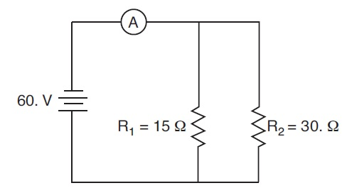

Show Work by applying the GUESS method. G (write out the given), U (write out the unknown), E (write out the equations),
S (substitute numbers with units), S (solve for the unknown).
Copper is a metal commonly used for electrical
wiring in houses. Which metal conducts
electricity better than copper at 20°C?
1) aluminum
2) gold
3) nichrome
4) silver
When only one lightbulb blows out, an entire
string of decorative lights goes out. The lights in
this string must be connected in
1) parallel with one current pathway
2) parallel with multiple current pathways
3) series with one current pathway
4) series with multiple current pathways
An electric toaster is rated 1200 watts at
120 volts. What is the total electrical energy used
to operate the toaster for 30. seconds?
1) 1.8 × 103J
2) 3.6 × 103 J
3) 1.8 × 104 J
4) 3.6 × 104 J
Which type of oscillation would most likely
produce an electromagnetic wave?
1) a vibrating tuning fork
2) a washing machine agitator at work
3) a swinging pendulum
4) an electron traveling back and forth in a wire
A bolt of lightning transfers 28 coulombs of charge through an electric potential difference of
3.2 × 107 volts between a cloud and the ground in 1.5 × 10−3 second. Calculate the average electric
current between the cloud and the ground during this transfer of charge.
A 15-ohm resistor, 30.-ohm resistor, and an ammeter are connected as shown with a 60.-volt battery.

a) Calculate the equivalent resistance of R1 and R2.
b) Determine the current measured by the ammeter.
c) Calculate the rate at which the battery supplies energy to the circuit.
d) If another resistor were added in parallel to the original circuit, what effect would this have on the current through resistor R1?